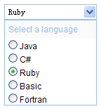

自定义组合框
继承$.fn.validatebox.defaults，使$.fn.combo.defaults重载。
依赖关系
- 表单验证
- 控制面板
使用方法
示例：combo
属性
属性继承表单验证,以下是只读组合框独有的属性。
| 名称 | 类型 | 描述 | 默认值 |
|---|---|---|---|
| width（宽度） | number（数字） | 组合框的宽度。 | auto |
| panelWidth（下拉框宽度） | number（数字） | 下拉框的宽度。 | null |
| panelHeight（下拉框高度） | number（数字） | 下拉框的高度。 | 200 |
| multiple（可多选） | boolean（布尔型） | 定义是否支持多选。 | false |
| separator（分隔条） | string（字符串） | 当支持多选时，用以分隔文本的字符。 | , |
| editable（可编辑） | boolean（布尔型） | 定义用户是否可以直接向组合框输入内容。 | true |
| disabled（禁用） | boolean（布尔型） | 定义是否禁用输入框。 | false |
| hasDownArrow（下拉图标） | boolean（布尔型） | 定义是否显示下拉按钮。 | true |
| delay（延迟） | number（数字） | 最后一次输入事件与搜索之间的延迟间隔。 | 200 |
| keyHandler（按键助手） | object（对象） |
当用户按下一个键位时调用的函数，默认的按键助手定义如下：
keyHandler: {
up: function(){},
down: function(){},
enter: function(){},
query: function(q){}
}
|
事件
| 名称 | 参数 | 描述 |
|---|---|---|
| onShowPanel | none | 当显示下拉面板的时候触发。 |
| onHidePanel | none | 当隐藏下拉面板的时候触发。 |
| onChange | newValue, oldValue | 当组合框的值发生改变时触发。 |
方法
方法继承表单验证，以下是只读组合框独有的方法。
| 名称 | 参数 | 描述 |
|---|---|---|
| options | none | 返回属性对象。 |
| panel | none | 返回下拉面板对象。 |
| textbox | none | 返回文本框对象。 |
| destroy | none | 销毁组件。 |
| resize | width | 调整组件的宽度。 |
| showPanel | none | 显示下拉面板。 |
| hidePanel | none | 隐藏下拉面板。 |
| disable | none | 禁用组合框。 |
| enable | none | 启用组合框。 |
| validate | none | 验证输入的值。 |
| isValid | none | 返回验证结果。 |
| clear | none | 清除组件的值。 |
| getText | none | 获取组合框的值包括代码和文字部分。 |
| setText | text | 设置输入框的值。 |
| getValues | none | 获取选中项前面的code值（多选时使用），结果为数组。 |
| setValues | values | 设置下拉面板选中的值（多选使用），参数values是一个数组。 |
| getValue | none | 获取选中项前面的code值。 |
| setValue | value | 设置选中的值，参数为下拉面板中选项的代码号。 |
| getName | none | 获取选中项后面的文字部分。 |
| getNames | none | 获取选中项后面的文字部分（多选），结果为数组。 |